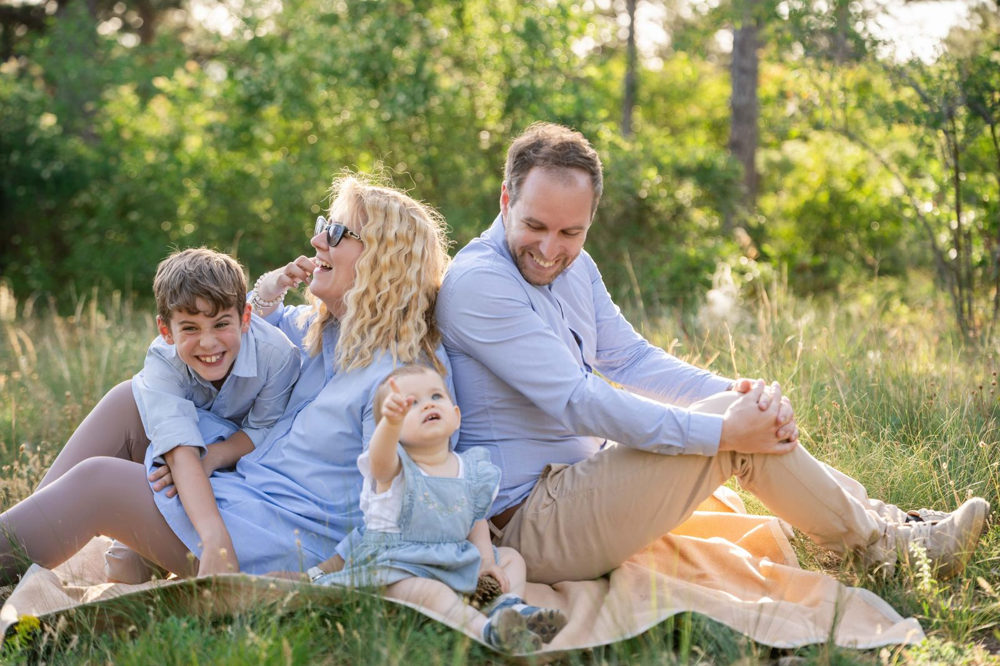
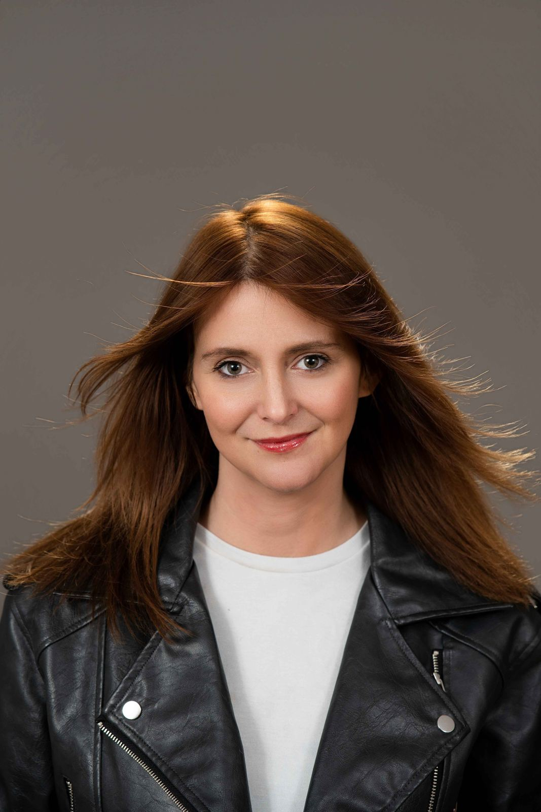
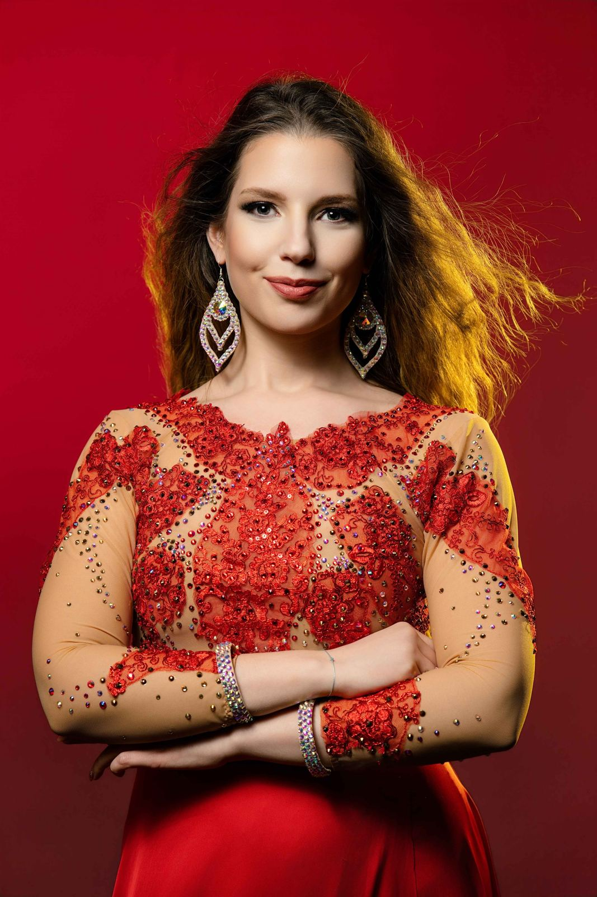

A te fotózás-útmutatód
A válaszaid alapján összeállítom neked, hogy:
- mit vegyél fel, hogy jól érezd magad benne, és jól mutasson a képen
- hol és milyen fényben érdemes fotózni a hangulathoz, amit szeretnél
- mit csinálj, ha a gép előtt lefagysz (velem nem fogsz)

Szia, Viki vagyok
A legtöbben azzal érkeznek hozzám, hogy „én nem vagyok fotogén”. Aztán a fotózás felénél már nevetünk, és a képeken is ez látszik.
Nálam nem kell pózolni, csak lenni. Beszélgetünk, játszunk, és közben én figyelem a fényt és a pillanatot, hogy neked ne kelljen.


Mindegy, melyik áll közelebb hozzád. A kvíz végén ebben is segítek dönteni.
Amit gyakran kérdeznek
Mi van, ha nem tudok pózolni?
Nem is kell. Végig mondom, merre fordulj, mit csinálj a kezeddel, és a legjobb képek általában akkor készülnek, amikor már elfelejted, hogy fotózlak.
Mit kapok a kvíz végén?
Egy felkészülő útmutatót emailben, a válaszaidhoz igazítva: öltözködés, helyszín, fény, és néhány trükk arra az esetre, ha izgulsz. Utána is írok majd néhányszor, de bármikor leiratkozhatsz egy kattintással.
Mennyibe kerül egy portréfotózás?
Attól függ, hányan lesztek a képen, stúdióban vagy szabadtéren fotózunk, és hány képet szeretnél. Ha elolvastad az útmutatót, szívesen küldök személyre szabott ajánlatot.
Hol fotózunk?
Saját stúdióm Érden van, de budapesti stúdióban is fotózom. Szabadtéren Érd és Budapest környékén, valamint Szombathelyen és környékén várlak. Ha van egy kedvenc helyed, azt is szívesen megnézzük.